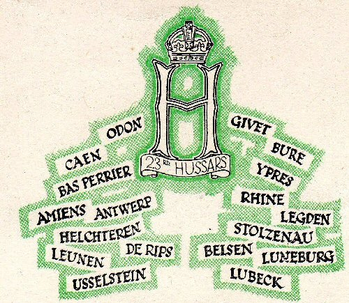
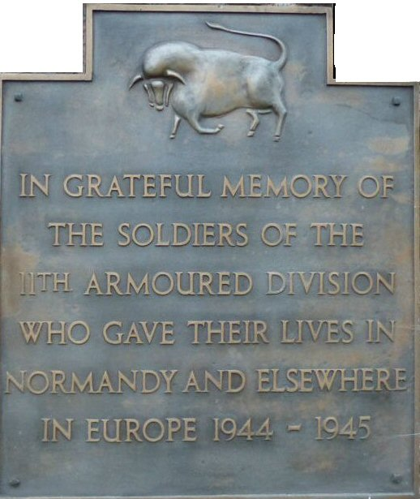

Welcome
The 23rd Hussars (23H) was a tank regiment which, as part of the British 11th Armoured Division, played an important part in the breakout from the Normandy beachead in the crucial days following the D-Day landings in June, 1944.
The Regiment subsequently fought its way across northern France, Belgium, Holland and Germany. An eventful journey...

...which ended at an abandoned marine barracks in Husum, Schleswig-Holstein, in 1945. The war was over, the allies victorious and, in January 1946, with the same stroke of a pen that in 1940 had first created it, the Regiment was disbanded.
Here, I hope, you will discover more about that journey, and especially about the men who took part in it.
"They had been drawn haphazardly from from all walks of life and from every corner of the British Isles. They were of all ages....They were a cross-section of Great Britain at war - unmilitary, peace loving, not motivated by any burning zeal - indeed far from keen to expose themselves to danger but united in a resigned determination to do whatever they were asked to do as well as they could.".
"Monkey Business, The Memoirs of General Sir Cecil Blacker", p.52.
Along the way, more than 150 of those men lost their lives and over 220 were wounded. And, for some who came through it all, life would never be the same again.
My Dad was posted to 23H in 1943, aged 20. In the last few months of his life - he died in 2012 - he told me stories of his time with the Regiment. They will be repeated here, together with those of other 23H veterans whom I have had the great pleasure in meeting. Their quiet dignity was a constant inspiration.
As 'Monkey' Blacker put it:
"...another lesson which I learnt was the depth of courage, initiative and strength lying hidden beneath the placid ordinariness of the British character.".
"Monkey Business", p.93.
Lest We Forget
This website exists to remember and thank those 'ordinary' men who did such extraordinary things at a time when the world went half mad.
And a very special 'thank you' to the men who did not return; the faces missing from the VE celebrations:
"...the faces we would never see again, save in memory, for they died that we might stand in this German field on Victory Day".
23H Story, Page 252.
In the words of one 23H officer:
"Who remembers? I do - every day of my life."
Lt John Steinhart, C Squadron
